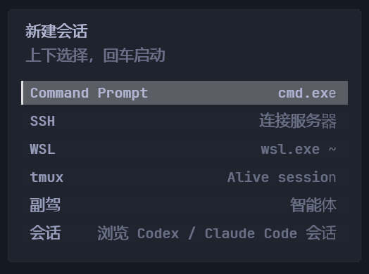
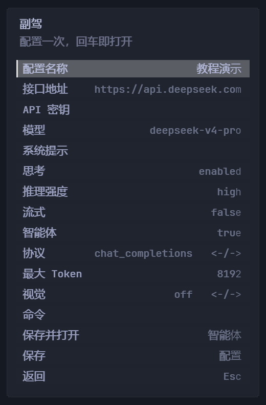
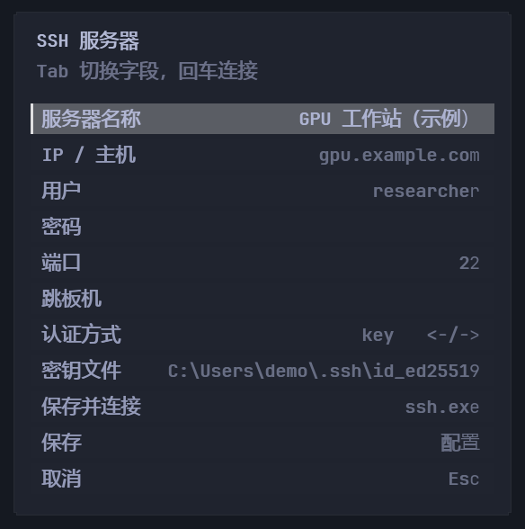
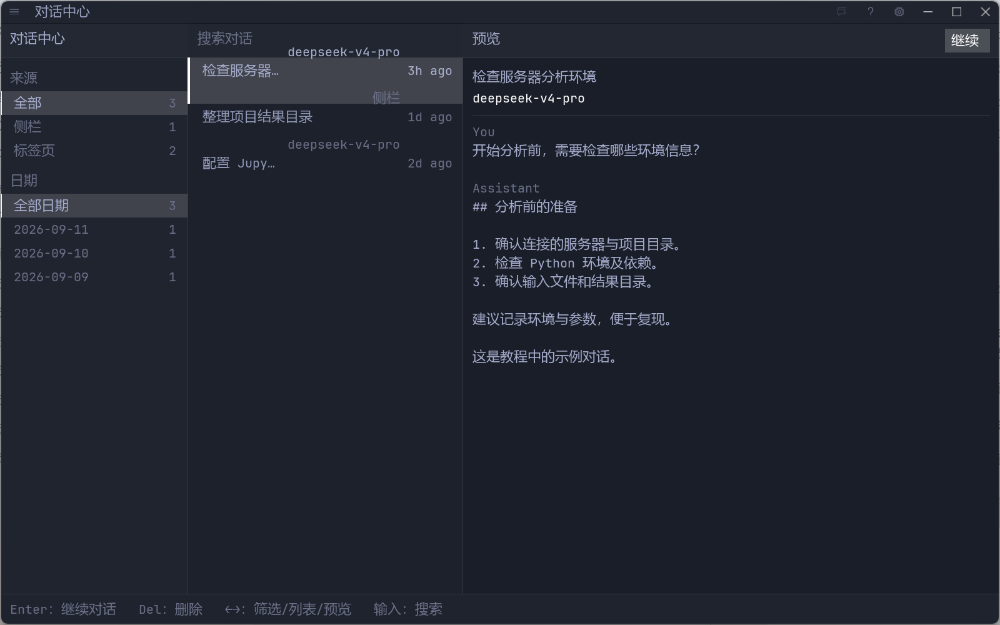
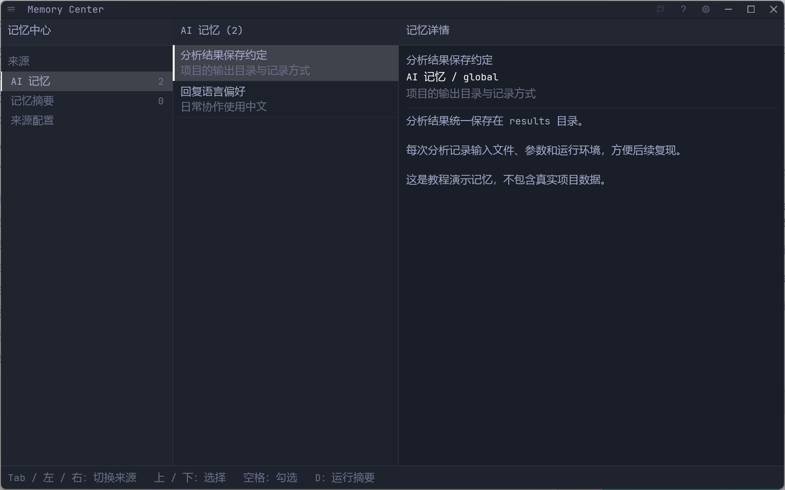
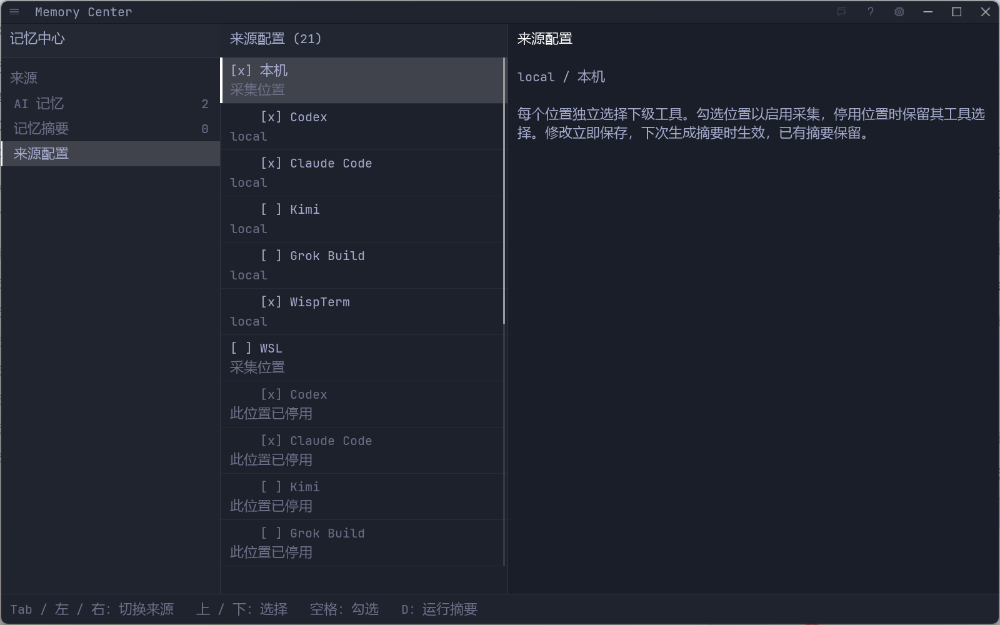
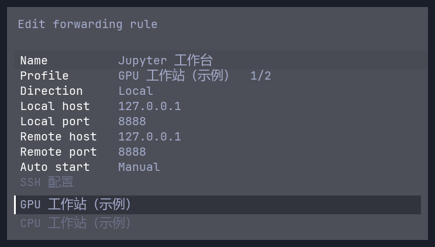
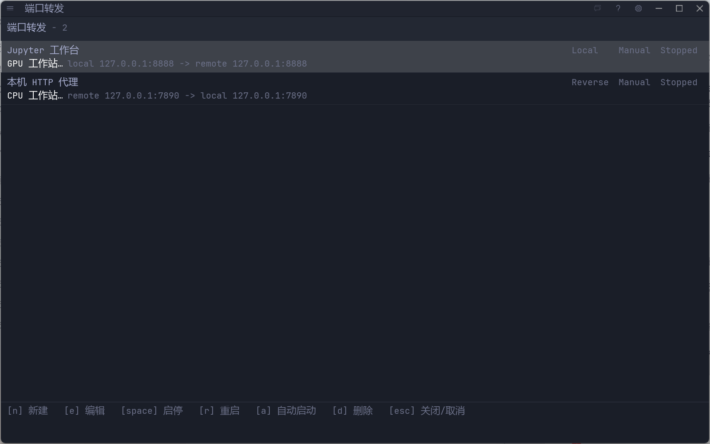

WISPTERM / 使用指南
从第一次连接，
到每天的工作。
在一个终端里连接服务器、使用 AI、找回对话和积累记忆。按顺序完成首次配置，也可以从左侧目录直接找到需要的功能。
配图均为 Windows 实机截图，使用演示服务器与示例记录。点击图片可查看原图。
01 / 入门
先认识三个常用入口
安装并打开 WispTerm 后，可以直接使用本地终端。SSH 登录、标签页、分屏和文件浏览不需要模型 API；使用内置 Copilot 时再配置 AI。
- 命令中心
- Ctrl+Shift+P 打开，输入功能名称筛选，再按 Enter 执行。记忆中心、对话中心、端口转发和设置都从这里进入。
- 新建会话
- 点击标签栏的 ＋ 或按 Ctrl+Shift+T，选择本地 Shell、WSL、SSH、副驾或历史会话。
- 终端旁的 Copilot
- 在终端标签页按 Ctrl+Shift+A，打开与当前终端关联的 AI 侧栏，一边查看输出，一边提问。

02 / 首次配置
配置模型 API
AI 配置把服务地址、密钥和模型保存成一个可重复使用的组合。你可以保存多个配置，在对话中切换。
最快的方式：配置 DeepSeek
- 前往 DeepSeek 开放平台创建 API Key，并确认账号有可用额度。
- 打开命令中心，选择设置：快速配置 AI（Settings: Quick Configure AI）。
- 粘贴密钥并选择校验并保存。验证成功后，WispTerm 会保存 DeepSeek 主模型和 Flash 子代理配置。
- 打开新建会话 → 副驾（Copilot），发送“你好，请介绍一下你能帮我完成哪些终端任务”。能收到回复就表示基本连接成功。
使用其他服务或自定义模型
在命令中心选择管理 AI 配置（Manage AI Profiles），或进入设置 → AI 配置，新建或编辑配置。

| 字段 | 怎么填 |
|---|---|
| 名称 / Name | 便于区分的名字，例如“日常助手”或“代码助手”。 |
| Base URL | 服务商提供的 API 基础地址，不是网页版聊天地址。DeepSeek 示例：https://api.deepseek.com。 |
| API Key | 该服务的密钥。只填在应用的配置表单里，不要发到对话或截图中。 |
| Model | 服务商实际提供、且你的账号有权限调用的模型 ID，不是自定义昵称。 |
| Protocol | 按服务商文档选择协议，见下表。地址相似不代表协议相同。 |
| System / Agent | System 留空可使用内置提示词；需要执行命令、读写文件等工具时启用 Agent。 |
| 服务接口 | Protocol | 填写提示 |
|---|---|---|
| OpenAI 兼容聊天接口 | chat_completions | DeepSeek 等服务使用此方式；Base URL 按服务商要求填写。 |
| OpenAI Responses | responses | 例如 https://api.openai.com/v1，也支持以 /responses 结尾的完整地址。 |
| Anthropic Messages | anthropic | 官方地址用 https://api.anthropic.com；第三方兼容服务需显式选择此协议，并填写 Max Tokens。 |
| 外部 Agent | acp | 填写启动 Command，使用外部 Agent 自己的登录与模型配置，见技能与工具。 |
检查结果：保存后启动一个新 Copilot 对话进行验证。已有对话可点击顶部模型名称，或输入 /model 选择配置；这只切换当前对话，不会改写全局默认配置。
03 / 远程工作
登录 SSH 服务器
将服务器保存为 SSH 配置后，连接、文件浏览和端口转发都可以复用它。开始前准备好主机地址、用户名、SSH 端口及密码或密钥。
- 打开新建会话，进入 SSH 列表，选择新建 SSH 服务器。
- 填写名称（例如
GPU 工作站）、主机地址、用户和端口。SSH 默认端口一般是22；管理员提供了其他端口就使用实际值。 - 按服务器要求选择认证方式。密码认证填写密码；密钥认证填写本机私钥文件路径；已有 OpenSSH 配置或 ssh-agent 时可使用
credentials。需要经过跳板机时填写跳板机。 - 选择保存并连接。首次连接时核对主机指纹，完成认证后会打开远程终端。
- 在远程终端运行
hostname和pwd，确认连接的机器和当前目录。以后从 SSH 列表选中这个配置，按 Enter 即可连接。

已经有 ~/.ssh/config？
在命令中心运行导入 OpenSSH 配置（Load OpenSSH Config）。它会导入兼容的 Host、HostName、User、Port 和 ProxyJump 信息，跳过通配符 Host；认证继续由 OpenSSH 配置、默认密钥或 ssh-agent 处理，不会导入密码。
04 / AI 协作
让 Copilot 带着终端上下文工作
独立副驾标签页适合完整任务；终端侧栏适合解释当前输出、排查报错，以及辅助本地或远程操作。
- 切到需要帮助的终端，按 Ctrl+Shift+A 打开侧栏。
- 选中相关输出，再从命令中心执行发送给 Copilot。没有选区时，会使用最近的终端输出作为上下文卡片。
- 描述目标与范围。例如：“解释这段安装错误，先检查当前 Python 环境，给出修复建议。”
- 需要执行任务时，明确机器、目录和预期结果；查看工具调用和权限提示，再决定是否允许操作。请求进行中可按 Esc 停止。
请检查当前 SSH 服务器上的 ~/project，确认运行分析所需的环境是否齐全。先报告缺失项，安装前等我确认。
想把结果留档，可从命令中心选择 Export Copilot Markdown 导出对话；选择 Export Copilot Markdown Clean 可保留用户提示和最终回复，省略思考过程。
05 / 找回工作
在对话中心继续上次的任务
对话中心集中浏览 WispTerm 自己保存的副驾侧栏和 AI Chat 标签页记录，适合查找“前几天那段分析”并接着做。
- 打开命令中心，搜索并选择对话中心（Conversation Center）。
- 按来源和日期缩小范围，输入关键词搜索对话。选中记录后，在预览区确认内容。
- 点击继续或按 Enter 恢复对话。如果它已经打开，会切换到原会话。
只想快速恢复时，命令中心的副驾历史（Copilot History）更直接：输入标题或模型关键词，按上下键选择，再按 Enter。需要完整筛选和预览时，点击对话中心 / Open Center，或按 Ctrl+Enter。

Codex、Claude Code 等外部工具的记录在哪里？
打开新建会话 → 会话（Sessions），选择本机、WSL 或 SSH 目标，浏览外部 AI 工具的历史。选择记录可预览和恢复，也可用 M 导出 Markdown、A 附加到 Copilot。恢复需要目标机器上已安装相应工具，并且原项目目录仍然存在。
没有找到记录？先清除日期、来源和关键词筛选，再确认自己找的是 WispTerm 对话，还是外部 Agent 的历史。
06 / 积累上下文
用记忆中心保留有用的信息
对话中心保留“说过什么”；记忆中心帮助你查看长期事实与从历史对话生成的摘要。长期记忆适合稳定的项目背景、工作偏好和环境约定。
先保存一条长期记忆
- 在 Copilot 中输入
/记住 这个项目的分析结果统一保存在 results 目录。 - 输入
/记忆查看已保存的事实；也可以从命令中心打开记忆中心，选择来源和条目查看详情。 - 有工作目录时，记忆保存在项目层；没有工作目录时使用全局层。删除不再适用的条目可用
/忘记 <记忆名称>。

从历史对话生成摘要
- 在记忆中心打开来源配置。
- 先勾选位置：本机、WSL 或某台已保存的 SSH 服务器，再勾选该位置下的工具。各位置可独立选择 Codex、Claude Code、Kimi 和 Grok Build；WispTerm 自身历史只在本机提供。
- 例如，CPU 服务器只选 Claude Code，GPU 服务器只选 Codex。Kimi 和 Grok Build 默认不勾选；按需启用。
- 修改会立即保存，并在下次摘要时生效。回到记忆中心按 D，或从命令中心运行 Run Memory Digest Now，等待采集和摘要完成后查看结果。

希望每天自动整理？
在配置文件中开启每日摘要，并指定已保存的 AI 配置名称。下例的“日常助手”需要替换为你实际创建的名称，时间使用本机时区：
memory-digest-enabled = true
memory-digest-profile = 日常助手
memory-digest-run-after = 04:00WispTerm 运行期间会在设定时间之后检查每日任务。不开启自动摘要也可以手动运行。具体来源以“来源配置”中的勾选为准。
记忆的用途：给后续工作提供背景。环境、路径或项目约定变了，要更新记忆；AI 生成的摘要也应对照原始记录核实。
07 / 连接服务
把服务器上的服务带到本机
端口转发通过 SSH 连接两个端口。先保存并验证一个可用的 SSH 配置，再从命令中心打开端口转发（Port Forwarding）。
例一：在本机打开远程 Jupyter
- 在服务器启动 Jupyter，让它监听服务器的
127.0.0.1:8888，记下输出中的 token。 - 在端口转发页按 N 新建规则，填写名称，例如
Jupyter。 - 在 Profile 选择该服务器；聚焦字段后可用左右键或空格切换已保存的配置。
- 按下面的示例填写字段，按 Enter 保存。回到列表，选中规则并按 Space 启动。
- 状态变为 Running 后，在本机浏览器打开
http://127.0.0.1:8888，按 Jupyter 的提示使用 token 登录。
| 表单字段 | Jupyter 本地转发 | 本机代理反向转发 |
|---|---|---|
| Direction | Local | Reverse |
| Local host | 127.0.0.1 | 127.0.0.1 |
| Local port | 8888 | 7890 |
| Remote host | 127.0.0.1 | 127.0.0.1 |
| Remote port | 8888 | 7890 |

例二：让服务器使用本机 HTTP 代理
确认本机代理实际监听 127.0.0.1:7890，按表格右列建立 Reverse 规则并启动，然后在服务器的 Shell 中设置：
export HTTP_PROXY=http://127.0.0.1:7890
export HTTPS_PROXY=http://127.0.0.1:7890端口要按实际服务调整。这两行影响当前 Shell 和它启动的程序；使用完可运行 unset HTTP_PROXY HTTPS_PROXY。
列表中 Space 启停、E 编辑、R 重启、A 切换自动启动。关闭管理标签页不会停止转发；需要结束时，回到列表停止规则。
查看端口转发管理页

127.0.0.1 或 localhost。本地端口被占用时，可把 Local port 改成 8889，Remote port 保持 8888，再访问本机的 8889 端口。08 / 查看产物
浏览、传输与预览文件
- 切到本地、WSL 或 SSH 终端，按 Ctrl+Shift+Alt+E 打开文件浏览器。
- 进入目标目录，双击文件进行预览。也可以在终端输出中按住 Ctrl 点击文件路径，打开预览。
- 查看 Markdown、文本、表格、图片或 PDF。图片和 PDF 图集可用左右键切换文件；PDF 用 PageUp / PageDown 翻页。
- 在 SSH 文件浏览器中，可拖入本地文件或文件夹上传；Shift+U 选择整个文件夹上传。在 SSH 输出中 Ctrl+Shift 点击远程路径，可下载文件或目录。
远程相对路径的识别依赖 Shell 上报当前工作目录。如果显示 SSH cwd unknown，先使用绝对路径，并按文件浏览器说明配置 Shell 集成。
网页链接可以在内置浏览器面板中打开；偏好系统浏览器时，在配置文件设置 browser-open-mode = system-browser。连接远程网页服务可使用上一节的端口转发。
09 / 扩展工作方式
用技能和工具复用经验
技能中心：管理可重复使用的操作说明
从命令中心打开技能中心（Skill Center），查看本机与远程位置的技能，选中条目查看详情，再按页面操作导入或同步到需要的位置。技能通过 SKILL.md 描述用途和步骤；在 Copilot 中可以用 $技能名 引用。
刚完成一项值得复用的工作时，在对话中输入 /沉淀 环境检查 生成技能候选。先阅读预览，确认后输入 /沉淀 确认 保存；不合适则输入 /沉淀 取消。
MCP：连接额外工具
在命令中心打开MCP 服务器，按工具提供方的说明填写名称、启动命令和参数，保存后测试连接。涉及环境变量、请求头或其他复杂选项时，使用配置目录下的 mcp.json。详见 Copilot 与工具配置说明。
ACP：使用已登录的外部 Agent
如果已经安装并登录了外部 Agent，可新建一个 AI 配置，将 Protocol 设为 acp，填写适配器启动 Command。此模式不需要填写 Base URL、API Key 和 Model，由外部 Agent 管理认证和模型；先按外部 Agent 接入说明准备适配器。
10 / 日常操作
把终端整理成顺手的工作环境
| 想做什么 | Windows / Linux | macOS |
|---|---|---|
| 新建会话 | Ctrl+Shift+T | Cmd+Shift+T |
| 向右 / 向下分屏 | Ctrl+Shift++ / Ctrl+Shift+- | Cmd+Shift++ / Cmd+Shift+- |
| 切换分屏方向 | Ctrl+Shift+L | Cmd+Shift+L |
| 下一个标签页 | Ctrl+Tab | Ctrl+Tab |
| 上一个 / 下一个面板 | Ctrl+Shift+[ / Ctrl+Shift+] | Cmd+Shift+[ / Cmd+Shift+] |
| 关闭当前面板或标签页 | Ctrl+Shift+W | Cmd+W |
双击标签标题可重命名。在分屏里同时放代码、日志和 Copilot，可以减少来回切换。全屏 vim 或 Agent 界面可能接收 Alt+方向键，切换面板时可使用表格中的循环快捷键。
主题、字体和配置文件
在命令中心打开设置调整常用选项；先到主题库选一个主题，再根据名称配置。需要更多选项时编辑配置文件，每行使用 key = value：
theme = Poimandres
font-size = 14
copy-on-select = true
right-click-action = pasteWindows 配置位于 %APPDATA%\wispterm\config；macOS 为 ~/Library/Application Support/wispterm/config；Linux 为 $XDG_CONFIG_HOME/wispterm/config，未设置时使用 ~/.config/wispterm/config。便携配置可能覆盖默认位置。保存后支持热重载，需重启的选项以界面提示为准。
11 / 排查问题
卡住时，从这里检查
AI 配置保存了，但没有回复
先检查界面中的 API 错误：401/403 通常与密钥或权限有关，429 可能是额度或限流；404 要核对 Base URL、Protocol 和模型 ID。连接超时则检查网络与代理。确认服务商允许该账号调用所填模型后，再开一个新对话测试。
SSH 连接失败
核对主机、端口、用户和认证方式。先在本机终端用 ssh -p 22 user@host（替换为实际信息）检查是否能连接；使用密钥时确认私钥路径和文件权限。需要 VPN 或跳板机的环境，先确保网络路径可达。
端口转发显示 Error，或网页打不开
查看规则旁的具体 SSH 错误。依次确认 SSH 配置可连接、转发规则处于 Running、目标服务正在监听预期端口、本地端口未被占用。Jupyter 等应用仍可能要求 token 或密码；转发不会绕过应用登录。
记忆中心没有摘要
先确认所选位置上有对应工具的真实历史记录，再检查“来源配置”是否同时启用了位置和工具。确认摘要使用的 AI 配置可用，手动运行一次并查看结果。尚未采集、没有可读记录或模型请求失败时，都可能没有摘要。
找不到教程中的入口
优先在命令中心按功能名称查找，并核对中英文名称。若当前安装较旧，可先到下载页面更新。Windows 和 macOS 的快捷键有差异；Linux 桌面目前仍为实验性支持。